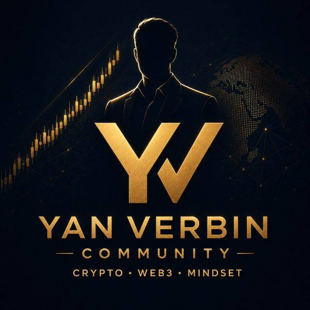

01ОСНОВНОЙ КАНАЛ
Держите рынок в поле зрения.
Мой взгляд на рынок, ключевые уровни и сценарии по активам, за которыми я слежу.
- BTC, ETH, SOL и ликвидные активы
- Торговые идеи и рыночный контекст
- Обновления по развитию сценария
YAN VERBIN × WEEX
Структура рынка. Ликвидность. Чёткие сценарии. Разбирайте с Яном Вербиным логику торговых решений и дисциплину, на которой они строятся.

Приветственная акция WEEX
Откройте приветственную акцию по приглашению Яна. Изучите задания, выберите следующий шаг и учитывайте собственные ограничения по риску.
Перейти к акцииКОД ПРИГЛАШЕНИЯ syd0
Купоны · Бонусные средства · Аирдропы позиций
Максимум, заявленный WEEX. Действуют требования к участникам и условия заданий; награды не гарантируют денежную выплату.Зарегистрируйтесь на WEEX по пригласительной ссылке Яна.
Чистое пополнение ≥ 100 USDT с удержанием средств 3 дня подряд.
Первая фьючерсная сделка на сумму ≥ 2 000 USDT. Награда — позиция с кредитным плечом, а не денежная выплата.
Получите купон за первый вход в приложение WEEX.
Доступность заданий, подходящие рынки, верификация, региональные ограничения и сроки действия наград определяются WEEX. Купоны и бонусные средства нельзя вывести как деньги. Номинальная стоимость позиции отличается от суммы бонусной маржи.
Все задания и полные условияОфициальная страница акции проверена 28 сентября 2026 года. Предложения могут меняться.
Подход к трейдингу
Я Ян Вербин, трейдер и создатель сообщества криптотрейдеров. В центре моего внимания — BTC, ETH, SOL и другие ликвидные активы.
Я делюсь своим взглядом на рынок, торговыми сетапами и обновлениями, открыто показывая, как принимаю решения.
Прежде чем выбрать направление сделки, разберитесь в движении рынка. Я изучаю структуру, ключевые уровни и общую картину.
Сначала структура, затем направление.Определите, где может находиться ликвидность и какие зоны заслуживают внимания. Уровень — это место для подготовки сценария, а не обещание разворота.
Уровень — это зона интереса.Определите, что подтвердит торговую идею и что её отменит. Для каждого сетапа нужны чёткие основания как для входа, так и для отказа от сделки.
Подтверждение. Вход. Отмена сценария.Задайте предел риска, определите размер позиции и регулярно пересматривайте план. Сопровождение сделки так же важно, как первоначальная идея.
Риск — часть плана.Схематичный пример. Не текущие рыночные данные и не торговый сигнал.
Сообщество и сопровождение
Читайте открытый канал, узнайте о закрытом сообществе или обсудите индивидуальное сопровождение.
Мой взгляд на рынок, ключевые уровни и сценарии по активам, за которыми я слежу.
Дополнительная аналитика рынка и торговые идеи в сообществе с более тесным общением.
Индивидуальное сопровождение для трейдеров, которым нужен более персональный формат.
Наличие мест в VIP-сообществе, стоимость и условия индивидуального сопровождения уточняются через официальный контакт до вступления.
YAN VERBIN / СООБЩЕСТВО
Место, где можно следить за рынком, обсуждать логику сделок и развиваться вместе с другими трейдерами.
Присоединиться в TelegramПЕРЕД ВСТУПЛЕНИЕМ
Откройте официальный Telegram-канал, чтобы читать обзоры рынка и торговые идеи. VIP-доступ и индивидуальное сопровождение обсуждаются отдельно через официальный контакт.
Регистрация на WEEX и услуги Яна не связаны между собой. До оплаты уточните наличие мест, стоимость и условия VIP-доступа через официальный контакт в Telegram.
Гарантированной доходности нет. Ян делится собственным анализом, возможными сценариями и логикой торговых решений. Ответственность за сделки и управление риском остаётся за вами.